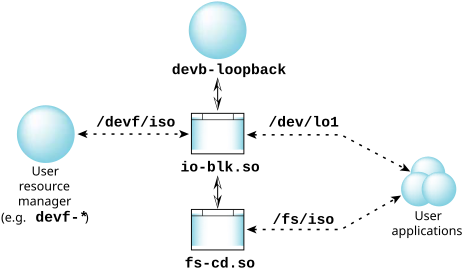

Pseudo block driver
devb-loopback [loopback loopback_option[,option]]
[blk option[,option]...]
[fs_type options] &
QNX OS
loopback ro,fd=/dev/cd0,rw,fd=/fs/hd/iso.img
The global options include the following:
The default is 1. You can specify a value of 0 to force all I/O to be performed synchronously in the context of the filesystem caller; it can be higher to prevent this I/O from becoming a bottleneck to the filesystem layers above (appropriate only when multiple fd= paths have been specified). The pool of threads services requests to all fd= files in the order of client priority.
Change to the specified user ID after setup. Default is 0.
The order-dependent options include the following:
Driver support,below.
Each pathname results in the creation of a corresponding block-special device (see the global prefix= option), the content of which is mirrored over the file descriptor using standard read/write calls. You can then mount traditional block filesystems (such as fs-dos.so and fs-qnx6.so) on top of these pseudo devices and use them transparently.
You can specify multiple fd= pathnames; they're managed by a single devb-loopback process.
The default is sync.
You might also need this option in some cases where a filesystem image was originally formatted on a device with a different sector size to that of the hosting filesystem; it may be necessary for correct operation or performance reasons to mimic the original sector size.
This option applies to all subsequent instances of fd=, but you can reset it to use the probed value with an empty option (e.g. blksz=2048,fd=/F1,blksz=,fd=/F2).
Since devb-loopback loads the standard block device DLLs, which creates a buffer cache using the same default rules as for the disk filesystems, the cache is likely to be too big for devb-loopback. You can reduce the cache size using blk cache=size. Depending on the actual size of the device, and the level of caching already implemented by its driver, a value of 128k may be sufficient.
The block filesystems in the QNX OS are implemented as a series of DLL modules and a set of internal APIs. Thus it's possible to mount disk-based filesystems (such as Power-Safe or DOS) only onto released QNX devb-* drivers. The devb-loopback driver implements a mapping between an arbitrary file descriptor and the block API, allowing any resource manager to be used to host a disk filesystem.
Internal function calls, normally targeted at a CAM driver, are translated into standard read() and write() calls onto the host file descriptor, and are used to populate the data content of a pseudo block device, which appears to the system as a disk.
devb-loopback fd=/devf/iso blk automount=lo0:/fs/iso:cd

Other uses might be to mount images from /dev/shmem, an image filesystem (IFS), or over NFS.
The host file needs to be pregrown.
Using devb-loopback in this case adds functionality that a disk filesystem format offers (access times, hard links, etc.) to the devf-* filesystem. In other cases, devb-loopback lets you use the caching (e.g., names and sectors) that io-blk.so supports, but that the resource manager underlying the host file might not.
Driver support
blocksize(the default is 1 byte, which isn't appropriate for use as a block device; it must be one of 512, 1024, 2048, or 4096). See also devctl() (below) and the loopback blksz= option.
disk blocksbetween the device and the filesystem buffer cache. I/O is in units of the advertised block size and within the bounds of the advertised device size. If the device supports the _IO_XTYPE_OFFSET modifier (corresponding to pread() and pwrite()), then that interface is used; otherwise a combined seek plus normal read/write is made.
Mounting
devb-loopback blk cache=256k,vnode=128 \
loopback ro,blksz=2048,fd=/mnt/EFS/tts.iso &
mount -r -t udf /dev/lo0 /mnt/tts
or via the blk automount= option:
devb-loopback blk cache=256k,vnode=128,automount=lo0:/mnt/tts:cd \
loopback ro,blksz=2048,fd=/mnt/EFS/tts.iso &
You can use umount to unmount the filesystem. The file descriptors to the underlying host image files aren't closed, and /dev/lo* remain present, until devb-loopback is terminated.